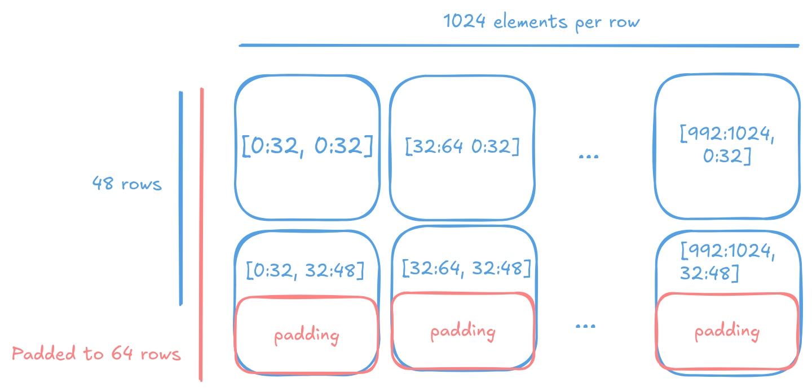
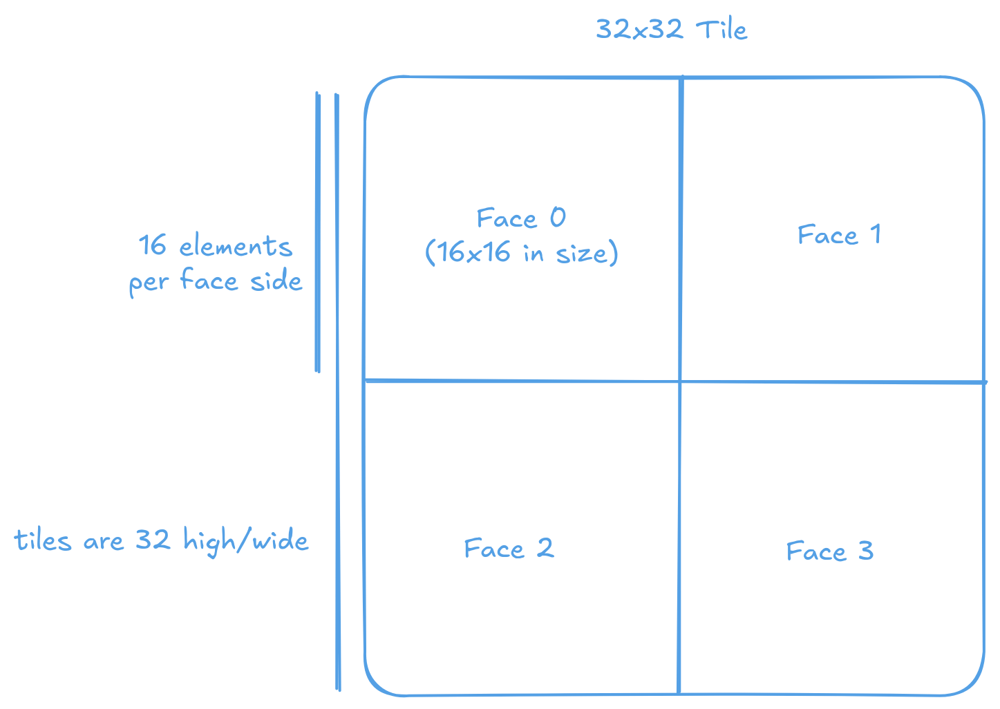
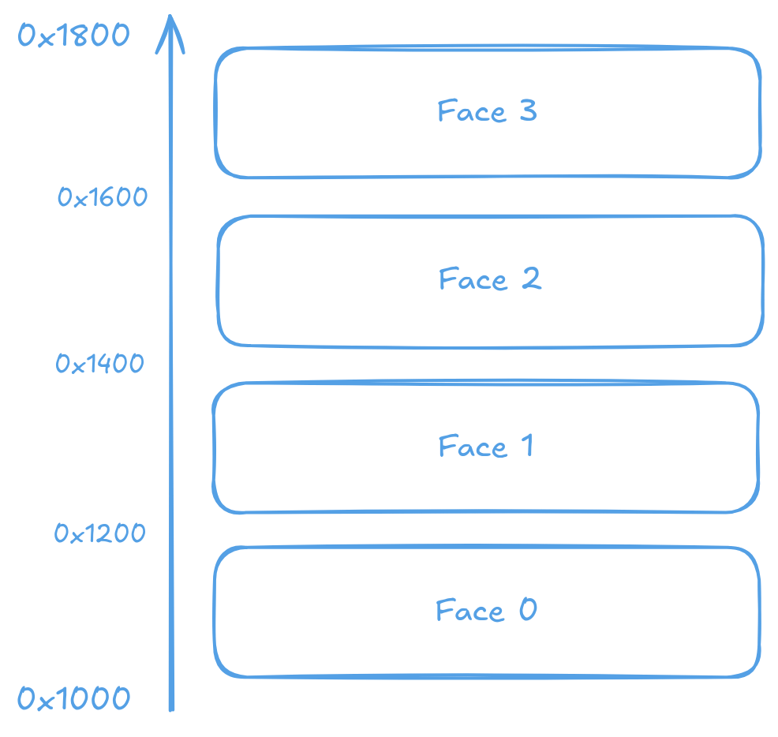

Tiles
Most compute and data movement on the Tensix processor use a tile as the fundamental unit. This page describes the tile structure, the memory layout of a tile and conversion between tiles and row major data (as used by most applications).
A tile is a 32x32 grid of values. Other tile sizes exist but currently have limited support. All elements in a tile share the same data type (integer, floating point, or block floating point).
A tile’s memory footprint depends on the underlying element’s data type. For 32-bit floating point elements, a tile occupies 4KB (32 x 32 x 4 bytes = 4096 bytes). For bfloat16 elements, a tile occupies 2KB (32 x 32 x 2 bytes = 2048 bytes). The size of each tile can be looked up programmatically by calling tt::tile_size(DataFormat).
Tiles are fixed-size data structures, so matrices and tensors must be aligned to tile boundaries. When data dimensions don’t align naturally, they must be padded to the nearest tile boundary. As tiles are 2D structures, padding is only needed in the last two dimensions. Higher-dimensional tensors (3D or more) only require padding in their final two dimensions. Most operations do not care about the specific value of padding as eventually they are disregarded when converted back into row-major. However, some, including matrix multiplication do. Thus it is advised to pad with zeros.

A 1024x48 matrix would be padded to 1024x64 to ensure that each row of 32 elements is aligned to a tile boundary.
Warning
The Tensix Processor is a little-endian architecture. Though all officially host architectures supported by Metalium are all little-endian, extra care must be taken when the host system may be big-endian.
Internal structure of a Tile
Most tiles are not stored as a simple flat array. Instead, a 32x32 tile is subdivided into four 16x16 faces, where each face is stored as a contiguous block in memory. The faces are arranged sequentially in memory, creating a hierarchical structure that enables efficient access patterns for the matrix and vector engines in each Tensix core.
{kind=link}

A 32x32 tile is organized into four 16x16 faces.
For example, consider a bfloat16 tile starting at address 0x1000 with a size of 0x800 (2KB). The tile occupies memory from 0x1000 to 0x17FF, with the four 16x16 faces located at addresses 0x1000, 0x1200, 0x1400, and 0x1600 respectively.
{kind=link}

Memory layout of a 32x32 tile with 16x16 faces with address of each face annotated.
Note
Other face sizes, orientation and count are possible but with limited support. The 32x32 tile with four 16x16 faces stored in a 2D array format is the most common and well supported configuration of tiles.
The following C function demonstrates the conversion from a 32x32 row-major matrix to the tile format with 16x16 faces:
void convert_to_tile(float* out, const float* input) {
// input must be a 32x32 tile
for (int i = 0; i < 32; i++) {
for (int j = 0; j < 32; j++) {
int face_row = i / 16;
int face_col = j / 16;
int face_index = face_row * 2 + face_col;
int element_row = i % 16;
int element_col = j % 16;
int offset = face_index * 16 * 16 + element_row * 16 + element_col;
out[offset] = input[i * 32 + j];
}
}
}
The following Python implementation achieves the same conversion using NumPy’s array operations:
import numpy as np
def convert_to_tile(arr: np.ndarray) -> np.ndarray:
if arr.shape != (32, 32):
raise ValueError("Input must have shape (32, 32)")
faces = arr.reshape(2, 16, 2, 16).transpose(0, 2, 1, 3).reshape(4, 16, 16)
return faces.reshape(32, 32) # Now the data is ordered in the tile format
To convert from tile format back to row-major format, the process is reversed by swapping the source and destination arrays in the indexing calculation:
void convert_from_tile(float* out, const float* input) {
// input must be a 32x32 tile
for (int i = 0; i < 32; i++) {
for (int j = 0; j < 32; j++) {
int face_row = i / 16;
int face_col = j / 16;
int face_index = face_row * 2 + face_col;
int element_row = i % 16;
int element_col = j % 16;
int offset = face_index * 16 * 16 + element_row * 16 + element_col;
out[i * 32 + j] = input[offset];
}
}
}
A Python/NumPy implementation of the same reversal is as follows:
import numpy as np
def convert_from_tile(arr: np.ndarray) -> np.ndarray:
# arr must be a 32x32 matrix in the tile data format
if arr.shape != (32, 32):
raise ValueError("Input must have shape (32, 32)")
faces = arr.reshape(4, 16, 16)
rm = faces.reshape(2, 2, 16, 16).transpose(0, 2, 1, 3).reshape(32, 32)
return rm # Now the data is ordered row major
Conversion between tiles and row-major format
Metalium provides convert_layout to convert matrices and tensors into tile format that resides in host memory. This function handles data beyond single tiles, provided the input is aligned and padded to tile boundaries, and supports all CPU-handled element types (standard integer types, FP32, bfloat16, etc.) - most formats except block floating point variants.
convert_layout requires four parameters:
Input data
Input data shape
Source layout type
Target layout type
The following example shows matrix conversion to tile format. NFACES in TILED_NFACES refers to the number of faces within each tile. The function supports different tile and face configurations. By default, it uses 32x32 tiles with four 16x16 faces as described above:
// matrix of shape 2x64x64
std::vector<float> input_matrix(2*64*64);
// Do something with input_matrix
...
// convert to tiles
auto tiled_matrix = tt::tt_metal::convert_layout(input_matrix,
{2, 64, 64},
tt::tt_metal::TensorLayoutType::LIN_ROW_MAJOR,
tt::tt_metal::TensorLayoutType::TILED_NFACES);
And the reverse:
// convert back to original layout
auto original_matrix = tt::tt_metal::convert_layout(tiled_matrix,
{2, 64, 64},
tt::tt_metal::TensorLayoutType::TILED_NFACES,
tt::tt_metal::TensorLayoutType::LIN_ROW_MAJOR);
Note
For TTNN users: convert_layout executes on the CPU in a single thread and does not use the Tensix Processor. Use ttnn::tilize() and ttnn::untilize() for layout conversion, or ttnn::tilize_with_zero_padding() and ttnn::tilize_with_val_padding() to handle non tile aligned data automatically. In most cases these on-device functions are much faster then the CPU counterpart as they can take advantage of the higher DRAM bandwidth and higher core count of the device. Please refer to the TTNN documentation for detail.
For example:
auto t = ttnn::ones(ttnn::Shape({1024, 48})).to(device);
// Conversion happens on device
auto tiled = ttnn::tilize_with_zero_padding(t);
auto untiled = ttnn::untilize(tiled);